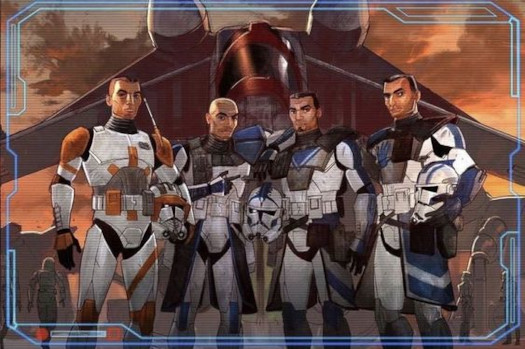
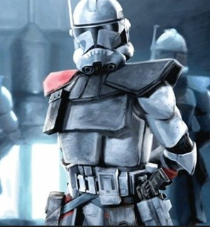
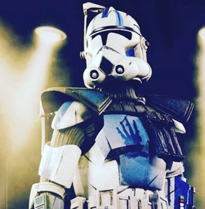
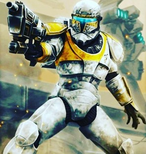
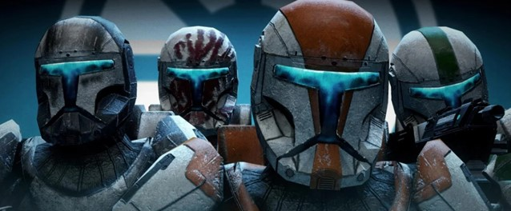
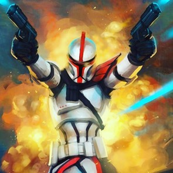
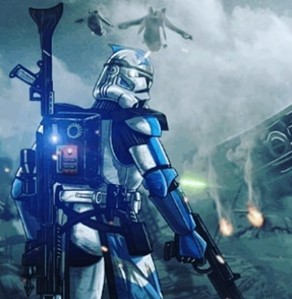
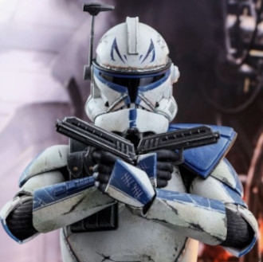

10 clones de Star Wars que você precisa conhecer

Se tem uma coisa que o fã de Star Wars curte, são os clones. Personagens esses que fizeram parte de
muitas histórias
dentro do cânon e que ainda vem contando muitas histórias, como a série The Bad Batch.
E com isso
decidimos
trazer
os 10 clones mais épicos de Star Wars. Vale ressaltar que haverá 2 grupos que estarão incluindo nesse
top 10.
Uma outra curiosidade, nos filmes, os clones são interpretados pelo ator Temuera
Morrison, que fez também a
série O Livro de Boba Fett e tem muito interesse em fazer outros personagens como os
clones. Em algumas entrevistas, ele vem falando sobre esse desejo de viver novos personagens; veja o que
ele tem dito:
"Bem, tem algumas pessoas, estou pensando no Capitão Rex (personagem das séries de animação The Clone Wars, Rebels e The Bad Batch). Ele se parece bastante comigo. Há também o Comandante Cody. O que aconteceu a eles? Havia todos aqueles exércitos de clones. Acho que (explorar isso) seria algo novo e estimulante”, afirmou Morrison.
10° – Comandante Wolffe CC-3636
Era um comandante de clone trooper do famoso esquadrão Wolfpack (alcateia), do grande
exército da
República
durante
as Guerras Cônicas. Ele serviu sob o comando do General Jedi Plo Koon no esquadrão do
104º Batalhão e
foi um
dos
comandantes clones mais famosos de todos os tempos.
Wolffe inicialmente usava a armadura de clone trooper da Fase I que tinha cores marrom
e kama (saia de
perna).
Após
a perda da maior parte do esquadrão Wolfpack, as cores foram alteradas para cinza e seu
capacete tinha
um
desenho de
lobo. Antes da missão em Aleen, ele e seu esquadrão usavam a armadura de clone trooper da Fase II, com
seu
capacete
com dentes pintados nas laterais para uma aparência intimidante. Ele usou blasters manuais DC-17 duplos
e
também
um
jetpack em missões de resgate.
9° – Colt Clone ARC Commander

Colt Clone ARC Commander Star Wars
Colt foi um dos soldados de elite da República durante os primeiros dias das
Guerras Clonicas. Atribuído
ao
Batalhão
Rancor
junto com seus tenentes Blitz e Havoc, ele foi encarregado
de algumas das missões mais críticas
logo
após
a
primeira batalha de Geonosis. Também ajudou no treinamento de cadetes clones em Kamino,
onde ele
instalou um
mantra
simples que foi ouvido por todo o exército até o final da guerra: “Lutamos como um só.”
Colt nunca
deixaria
um
homem
para trás e, como resultado, foi encarregado de defender a área do quartel durante a batalha de
Kamino,
retrocedendo
onda após onda de androides, incluindo o General Grievous.
Ele acabou sendo morto na batalha por Kamino, quando a assassina Asajj
Ventress invade para roubar o DNA
de
Jango
Fett
, algo que poderia ter sido um golpe fulminante na produção de novos clones para a
República.
Colt foi um dos ARC Troopers a usar a armadura experimental de
Fase II ARC Troopers, um pauldron
(ombreira)
e
kama
(saia de perna). Sua armadura foi estilizada com marcas vermelhas e pretas. Ele usava uma mochila e
bolsas
adicionais de munição em seu corpo. Em combate, sua arma preferida era uma carabina blaster DC-15S,
embora
ele
também carregasse blaster DC-17 em seus coldres.
8° – Comandante Cody CC-2224
Um dos oficiais mais graduados do exército de clones, o Comandante Cody era muito
estimado por seus
soldados
e
por
sua bravura na batalha por sempre liderar na linha de frente. Ao lado do General
Kenobi, ele liderou o
212º
Batalhão
em muitos dos confrontos mais importantes das Guerras Clonicas. Isso incluiu batalhas
de Christophsis a
Utapau,
abrangendo virtualmente toda a guerra. Conhecido por atacar destemidamente as linhas inimigas, o 212º,
sob o
comando
de Cody, tornou-se uma das unidades de clones mais confiáveis e eficazes na luta contra
exército
androide.
Cody, também conhecido como CC-2224, era um comandante leal, rude e direto, que
compartilhava uma
amizade
mútua
com
o General Kenobi. Com base em sua experiência no campo de batalha e habilidades de
liderança, ganhou o
respeito
de
outros Jedi e soldados clones.
As armaduras de Fase I e II de Cody apresentavam acolchoamento extra na parte superior,
junto com um
visor e
antenas
especializadas em comunicação e radar. Sua armadura era um pouco diferente, por ter uma insígnia de
classificação à
esquerda, mostrando sua patente e por ter diversas dispositivos de rastreamento. Foi pintado com
marcações
laranja
personalizadas. Ele também tinha uma antena na placa do ombro esquerdo, que ajudava na amplitude de
comunicação.
Além de um jetpack, embora não o usasse com frequência.
7° – Echo CT-1409

Echo CT-1409 star wars
Soldado de acordo com as regras, comprometido em cumprir seu dever da maneira mais eficiente possível,
Echo
era
um
membro valioso do Esquadrão Domino e da 501ª Legião. Recebendo seu
apelido por ecoar ordens e
regulamentos
para
seus
companheiros de esquadrão, CT-0408 foi tão leal e comprometido quanto parece. Ele e
Fives foram alguns
dos
últimos
clones remanescentes após a fracassada Invasão de Kamino, e por seu valente esforço em
defender seu
mundo
natal,
eles foram condecorados e promovidos a soldados ARC, esquadrão de elite.
Por causa de inúmeras torturas e também modificações em seu cérebro e corpo, ele é capaz de acessar
terminais,
interferir nas redes e comunicações inimigas, se tornando um membro valioso. Seu braço direito foi
trocado
por
uma
peça mecânica que acessa terminais de sistemas, suas pernas foram substituídas por pernas mecânicas, e
sua
medula
foi inserida a um mecanismo de controle ligada a sua mente.
Usou vários trajes durante as Guerras Clonicas, armadura tradicional da Fasse I na cor
toda branca, logo
após
usou o
mesmo traje, mas nas cores azuis representando a sua nova Legião 501°. Após se destacar
na batalha de
Kamino
se
tornou ARC Trooper e usou a armadura Fase II, um pauldron (ombreira) e kama (saias nas
pernas). Sua
armadura
foi
estilizada com marcas Azuis representando a Legião que por muito tempo foi sua casa. Ele usava uma
mochila e
bolsas
adicionais de munição em seu corpo. Em combate ele usava carabina blaster DC-15S, embora ele também
carregasse
blaster DC-17 em seus coldres.
6° – Capitão Gregor CC-5576-39

Clone Commando Gregor percorreu um dos caminhos mais exclusivos de qualquer clone
trooper. Como capitão
do
grupo
Foxtrot de elite, ele e sua equipe de Comandos foram enviados
repetidamente a situações terríveis e
implacáveis,
esperando sempre em virar a maré a favor da República.
Tempo mais tarde acabou sendo descoberto pelo Coronel Meeber Gascon e o
D-Squad trabalhando em um
restaurante em
Abafor. Gregor se lembrou de quem ele era e de seu papel no conflito
galáctico e pode ajudar o coronel e
seu
grupo a
voltar e fugir do planeta, porém, foi dado como morto quando ele defendeu bravamente o
D-Squad após a
explosão
de
rhydonium (combustível de naves), enquanto eles roubavam uma nave Separatista. Se esta
fosse à última
resistência de
Gregor, teria sido heróica, já que ele foi capaz de destruir incontáveis droides.
Anos mais tarde se descobre que ele estava vivo ao lado de Rex e
Wolffe. Gregor teria seu chip inibidor
removido
e
lutaria contra o Império Galáctico com o Esquadrão Fênix durante a
Guerra Civil Galáctica.
A viseira do capacete era amarela, já próprio capacete era branco e cinza com marcas de cerquinhas por
toda
parte.
Sua viseira iluminava em missões noturnas. Sua armadura corporal tinha marcações amarelas e camuflagem
acinzentada,
enquanto a parte inferior nas pernas tinha apenas a camuflagem. Ele também tinha uma mochila de comando.
Sua
armadura de comando pode ter salvado sua vida da explosão de rhydonium em Abafar, algo que mostra o quão
forte
essas
armaduras especiais eram. Como arma, ele usou o sistema de arma intercambiável DC-17m, embora usasse
principalmente
a variante de rifle blaster.
5° – Esquadrão Delta
Criada e treinada para caçar como uma única unidade, Esquadrão Delta foi uma das forças de clones mais perigosas e letais que já pisou dentre as forças da República. Composto por quatro Comandos da República de elite, o esquadrão foi uma das primeiras unidades de elite implantadas, desempenhando um papel crucial na primeira batalha de Geonosis.
Membros: Boss RC-1138 líder do esquadrão, Fixer RC-1140, Scorch RC-1262 e Sev RC-1207.
O capacete incluía uma viseira iluminada e tinha seus desenhos que diferenciavam entre os membros por todo o lado. Sua armadura corporal tinha assim como o capacete também marcações diferenciadas entre os membros do esquadrão. Eles também tinham uma mochila de comando. Como arma, eles usam o sistema de arma intercambiável DC-17m, embora usasse principalmente a variante de rifle blaster.
4° – Força Clone 99
A Força Clone 99, nomeado em homenagem ao valente “bad batcher” que
deu sua vida em defesa de Kamino, é
um
esquadrão
composto por esses clones extremamente diferentes. Embora ainda derivado do genótipo Jango
Fett, esse
esquadrão
parece e age de maneira muito diferente de seus irmãos clones.
Com uma taxa de sucesso de 100% em missões, os Bad Batch é frequentemente enviado
sutilmente para sujar
as
mãos
em
missões de operações sujas que não seriam exatamente populares no Senado da República.
Embora
frequentemente
reportando ao Comandante Cody, os Bad Batch evitam trabalhar com
“REGS” (clones normais) tanto quanto
possível
devido à sua aparência única e à desconfiança inerente que isso fomenta entre os clones normais.
Membros: Sargento Hunter (líder), Tech (Inteligência), Crosshair (atirador), Wrecker
(tanque) e Echo,
que
usa
seus
protótipos cibernéticos instalados em seu córtex para hackear as estratégias dos inimigos.
3° – Capitão Fordo

Capitão Fordo star Wars
Um raro ARC Trooper Classe Alpha, o Capitão Fordo era conhecido por
ser um homem de ação, muitas vezes
falando
apenas para dirigir seus soldados na batalha. Membro do lendário “Muunilinst 10“, sua
liderança e
habilidade
de
marechal foram essenciais para invadir secretamente a capital do Clã Bancário. Após um
pouso forçado na
cidade,
Fordo liderou sua equipe em direção ao QG Separatista, tomando uma
posição de artilharia ao longo do
caminho
e
ajudando a diminuir o fogo sobre o avanço do exército de clones.
Fordo lutaria até o fim da guerra, incluindo ajudar os Mestres Jedis
Yoda e Mace Windu a repelir a
invasão
terrestre
droide de Coruscant nos dias finais da República.
Ele foi classificado como capitão de um ARC Trooper, pois usava uma armadura de clone
trooper vermelha e
uma
bengala. Fordo empunhava duas pistolas blaster e usava uma armadura de Fase I, mas
depois usou uma Fase
II e
empunhou um fuzil Blaster DC-15A. Seu capacete da Fase II se parece com o capacete de um soldado
Recon
do
91º
e
também ostentava o Jaig Eyes.
2° – Fives CT-5555

Fives CT-5555 Star Wars
Fives era um dos amigos mais fiéis de Echo e um notável membro da 501°
Legião. Um dos clones mais únicos
e
individualistas, ele lutou continuamente pelos direitos e respeito que sentia que o exército de clones
merecia.
Também aprendeu com seus oficiais comandantes, Capitão Rex e General
Skywalker, que ordens e
regulamentos
são
prioridades secundárias para a vida dos homens sob seu comando.
Ele esteve presente em praticamente todas as batalhas em que o 501º participou de missões nos planetas
Kamino,
Umbara e Ringo Vinda. Serviu admiravelmente sob ordens do
capitão Rex, mas não tinha medo de verbalizar
decisões,
especialmente se ele sentia que vidas estavam em jogo. Fives foi um dos primeiros a
reconhecer a
corrupção
do
General Krell, e como ele era uma ameaça ao exército clone e à própria
República. No fim, ele acabou
descobrindo
também sobre os chips inibidores e lutou até o final de sua vida para descobrir a verdade sobre os eles.
Fives originalmente usava a armadura branca de todos os soldados clones. Depois de
ingressar na
501ª
Legião
,
personalizou sua armadura com marcas azuis e uma imagem de canhão rotativo Z-6 em sua placa de coxa para
homenagear
Hevy, irmão que tinha perdido anos atrás. Quando ele foi promovido a um ARC
Trooper, ele foi equipado
com
uma
armadura de elite, onde tinha as mesmas marcas azuis, mas com Kama (saias de pernas) e armadura extra
personalizadas. Suas armas eram variáveis, carabina blaster DC-15S e também carregava blaster DC-17 em
seus coldres.
1° – Capitão e Comandante Rex CT-7567
O Capitão Clone Rex, líder da 501ª Legião de elite e braço direito do
General Anakin Skywalker, foi um
dos
maiores
líderes do Grande Exército da República. Reconhecido por sua honra, coragem, resolução
criativa de
problemas
e
habilidade em combate, Rex era universalmente respeitado por seus homens e pelos
Jedi. Formando amizades
íntimas
com
muitos soldados sob seu comando, incluindo Fives, Echo,
Jesse, Cold e outros. Ele fez o seu melhor para
enfrentar
cada perda com calma, honrando sua memória e legado.

Após a queda dos Jedis, ele acabou se escondendo em meio as estrelas, tentando reunir o
máximo de clones
que
tinham
se rebelados contra as ordens do Império. Ele acabou ajudando os Bad Batch a tirar seus
chips inibidores
e
contando
a verdade sobre o que estava acontecendo.
Rex normalmente estava armado com duas pistolas blaster DC-17. Ele tinha armadura com
marcações azuis,
já
que
fazia
parte da 501ª Legião. Ele tinha marcas de contagem em seu elmo e pulsos, e tinha
Jaig Eyes em seu elmo,
que
só
foi
dado aos mais bravos dos guerreiros. Ele usava um kama com uma batedeira, devido ao seu posto de
capitão.